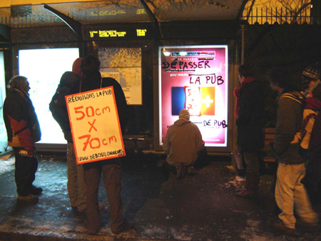

| |
Site dédié à la publication d'informations communiquées par le Collectif des déboulonneurs. En aucun cas ce site n'appelle à des actions illégales. | |
 |
||
|
Accueil du site > La Rochelle > Compte rendu de la deuxième action de barbouillage à La Rochelle
=>action : entre 18h et 19h dont 30 mn de barbouillage =>lieu : centre ville, place de verdun (gare de bus, à 50m du commissariat - aucune intention de provocation) =>nbre barbouileurs : 2 =>nbre personnes militant-e-s : 21 =>nbre médias : 2 de sud-ouest (photographe + journaliste) 1 de la radio locale demoiselle FM =>nbre panneaux barbouillés : 6 abri-bus, 11 faces en tout =>propriétaire des panneaux : jc decaux 
=>inscription : pollution visuelle, pollution écologique, pollution mentale, la pub envahit l’espace public, ces yeux ne sont pas à vendre, pub invasion endoctrinante, pub à l’excès, dépasser la pub 0% de pub (détournement), pub je dégueule, pub outrage systématiquement en plus autocollant 50x70 et un panneau "exemple" reprenant ce qu’il ya dans le dossier de presse du procès =>non violence 100% =>police : présente sur les lieux avant l’action car ils étaient en train d’interpeller des gens *au moment où on passe ils nous demandent ce qu’on fait la personne chargée de la police va les voir, leur explique et un des policiers derrière (après avoir reçu une info au talkie-walkie) dit à l’autre de laisser tomber il remonte dans leur voiture et nous regarde faire *une militante va les voir en tant que passante et leur dit "c’est scandaleux ya des gens qui sont en train de tagger les panneaux", le policier répond "on ne peut rien faire, on a reçu un ordre" ... pas d’arrestation =>prochaine action plannifiée le 23 février |
|
Site utilisant SPIP - Hébergement Ouvaton
|